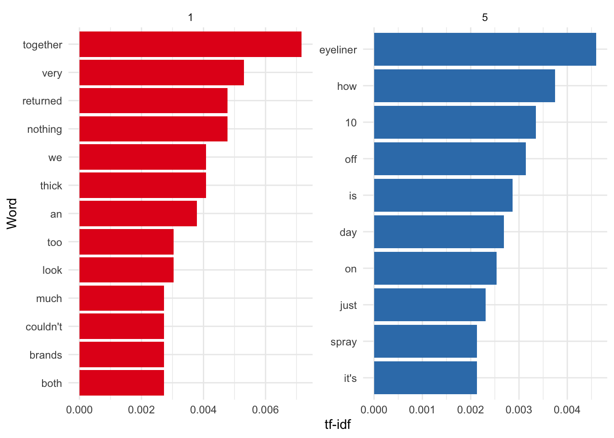

Chapter 8 Hunt data
Last updated: 9 March 2021.
Required reading
- Banerjee, Abhijit Vinayak, 2020, ‘Field Experiments and the Practice of Economics,’ American Economic Review, Vol. 110, No. 7, pp. 1937-1951.
- Berry, Donald, 1989, ‘Comment: Ethics and ECMO,’ Statistical Science, Vol 4, No 4, pp. 306-310.
- Duflo, Esther, 2020, ‘Field Experiments and the Practice of Policy,’ American Economic Review, Vol. 110, No. 7, pp. 1952-1973 (or watch the speech detailed below).
- Fisher, Ronald, 1935, The Design of Experiments, pp. 20-29, https://archive.org/details/in.ernet.dli.2015.502684/page/n33/mode/2up.
- Fry, Hanna, 2020, ‘Experiments on Trial,’ The New Yorker, 2 March, pp. 61-65, https://www.newyorker.com/magazine/2020/03/02/big-tech-is-testing-you.
- Gertler, Paul, Sebastian Martinez, Patrick Premand, Laura Rawlings, and Christel Vermeersch, Impact Evaluation in Practice, Chapters 3 and 4, https://www.worldbank.org/en/programs/sief-trust-fund/publication/impact-evaluation-in-practice.
- Hill, Austin Bradford, 1965, ‘The Environment and Disease: Association or Causation?’ Proceedings of the Royal Society of Medicine, 58, 5, 295-300.
- Kohavi, Ron and Stefan Thomke, 2017, ‘The Surprising Power of Online Experiments,’ Harvard Business Review, September-October, https://hbr.org/2017/09/the-surprising-power-of-online-experiments.
- Kohavi, Ron, Diane Tang, and Ya Xu, 2020, Trustworthy Online Controlled Experiments: A Practical Guide to A/B Testing, Cambridge University Press. (This sounds like a lot, but it’s a light book - it’s more about providing examples of issues to think about.) (Freely available through the U of T library.)
- Taback, Nathan, 2020, Design of Experiments and Observational Studies, Chapter 8 - Completely Randomized Designs: Comparing More Than Two Treatments, https://scidesign.github.io/designbook/completely-randomized-designs-comparing-more-than-two-treatments.html.
- Taylor, Sean, Dean Eckles, 2017, ‘Randomized experiments to detect and estimate social influence in networks,’ arXiv, https://arxiv.org/abs/1709.09636v1.
- Ware, James H., 1989, ‘Investigating Therapies of Potentially Great Benefit: ECMO,’ Statistical Science, Vol 4, No 4, pp. 298-306.
- Wu, Changbao and Mary E. Thompson, 2020, Sampling Theory and Practice, Springer, Chapters 1-3, and 5 (freely available through the U of T library).
Required viewing
- Ge, Kathy, 2021, ‘Experimentation and product design at Uber,’ Toronto Data Workshop, 4 February, https://youtu.be/UYzXElJTovg.
- Register, Yim, 2020, ‘Introduction to Sampling and Randomization,’ Online Causal Inference Seminar, 14 November, https://youtu.be/U272FFxG8LE.
- Xu, Ya, 2020, ‘Causal inference challenges in industry, a perspective from experiences at LinkedIn,’ Online Causal Inference Seminar, 16 July, https://youtu.be/OoKsLAvyIYA.
Recommended reading
- Angrist, Joshua D., and Jörn-Steffen Pischke, 2008, Mostly harmless econometrics: An empiricist’s companion, Princeton University Press, Chapter 2.
- Banerjee, Abhijit Vinayak, Esther Duflo, Rachel Glennerster, and Dhruva Kothari, 2010, ‘Improving immunisation coverage in rural India: clustered randomised controlled evaluation of immunisation campaigns with and without incentives,’ BMJ, 340, c2220.
- Beaumont, Jean-François, 2020, ‘Are probability surveys bound to disappear for the production of official statistics?’ Survey Methodology, 46 (1), Statistics Canada, Catalogue No. 12-001-X.
- Christian, Brian, 2012, ‘The A/B Test: Inside the Technology That’s Changing the Rules of Business,’ Wired, 25 April, https://www.wired.com/2012/04/ff-abtesting/.
- Dablander, Fabian, 2020, “An Introduction to Causal Inference,” PsyArXiv, 13 February, doi:10.31234/osf.io/b3fkw, https://psyarxiv.com/b3fkw.
- Deaton, Angus, 2010, ‘Instruments, Randomization, and Learning about Development,’ Journal of Economic Literature, vol. 48, no. 2, pp. 424-455.
- Duflo, Esther, Rachel Glennerster, and Michael Kremer, 2007, ‘Using Randomization In Development Economics Research: A Toolkit,’ https://economics.mit.edu/files/806.
- Gordon, Brett R., Florian Zettelmeyer, Neha Bhargava, and Dan Chapsky, 2019, ‘A Comparison of Approaches to Advertising Measurement: Evidence from Big Field Experiments at Facebook,’ Marketing Science, Vol. 38, No. 2, March–April, pp. 193–225.
- Groves, Robert M., 2011, ‘Three Eras of Survey Research,’ Public Opinion Quarterly, 75 (5), pp. 861–871, https://doi.org/10.1093/poq/nfr057.
- Hillygus, D. Sunshine, 2011, ‘The evolution of election polling in the United States,’ Public Opinion Quarterly, 75 (5), pp. 962-981.
- Imai, Kosuke, 2017, Quantitative Social Science: An Introduction, Princeton University Press, Ch 2.3, 2.4, 4.3.
- Jeffries, Adrianne, Leon Yin, and Surya Mattu, 2020, ‘Swinging the Vote?’ The Markup, 26 February, https://themarkup.org/google-the-giant/2020/02/26/wheres-my-email.
- Kohavi, Ron, Alex Deng, Brian Frasca, Roger Longbotham, Toby Walker, and Ya Xu. 2012. Trustworthy online controlled experiments: five puzzling outcomes explained. In Proceedings of the 18th ACM SIGKDD international conference on Knowledge discovery and data mining (KDD ’12). Association for Computing Machinery, New York, NY, USA, 786–794. DOI:https://doi.org/10.1145/2339530.2339653
- Landesberg, Eddie, Molly Davies, and Stephanie Yee, 2019, ‘Want to make good business decisions? Learn causality,’ MultiThreaded, Stitchfix blog, 19 December, https://multithreaded.stitchfix.com/blog/2019/12/19/good-marketing-decisions/.
- Levay, Kevin E., Jeremy Freese, and James N. Druckman, 2016, ‘The demographic and political composition of Mechanical Turk samples,’ Sage Open, 6 (1), 2158244016636433.
- Lewis, Randall A., and David H. Reiley, 2014 ‘Online ads and offline sales: Measuring the effects of retail advertising via a controlled experiment on Yahoo!’ Quantitative Marketing and Economics, Vol 12, pp. 235–266.
- Mullinix, Kevin J., Leeper, Thomas J., Druckman, James N. and Freese, Jeremy, 2015, ‘The generalizability of survey experiments,’ Journal of Experimental Political Science, 2 (2), pp. 109-138.
- Novak, Greg, Sven Schmit, and Dave Spiegel, 2020, Experimentation with resource constraints, 18 November, StitchFix Blog, https://multithreaded.stitchfix.com/blog/2020/11/18/virtual-warehouse/.
- Prepared for the AAPOR Executive Council by a Task Force operating under the auspices of the AAPOR Standards Committee, with members including:, Reg Baker, Stephen J. Blumberg, J. Michael Brick, Mick P. Couper, Melanie Courtright, J. Michael Dennis, Don Dillman, Martin R. Frankel, Philip Garland, Robert M. Groves, Courtney Kennedy, Jon Krosnick, Paul J. Lavrakas, Sunghee Lee, Michael Link, Linda Piekarski, Kumar Rao, Randall K. Thomas, Dan Zahs, 2010, ‘Research Synthesis: AAPOR Report on Online Panels,’ Public Opinion Quarterly, 74 (4), pp. 711–781, https://doi.org/10.1093/poq/nfq048.
- Ryan, A. C., A. R. MacKenzie, S. Watkins, and R. Timmis, 2012, ‘World War II contrails: a case study of aviation‐induced cloudiness,’ International journal of climatology, 32, no. 11, pp. 1745-1753.
- Said, Chris, 2020, ‘Optimizing sample sizes in A/B testing, Part I: General summary,’ 10 January, https://chris-said.io/2020/01/10/optimizing-sample-sizes-in-ab-testing-part-I/. (See also parts 2 and 3).
- Stolberg, Michael, 2006, ‘Inventing the randomized double-blind trial: the Nuremberg salt test of 1835,’ Journal of the Royal Society of Medicine, 99, no. 12, pp. 642-643.
- Sveriges Riksbank Prize in Economic Sciences in Memory of Alfred Nobel, 2019, popular science background, https://www.nobelprize.org/uploads/2019/10/popular-economicsciencesprize2019-2.pdf.
- Sveriges Riksbank Prize in Economic Sciences in Memory of Alfred Nobel, 2019, scientific background, https://www.nobelprize.org/uploads/2019/10/advanced-economicsciencesprize2019.pdf.
- Taddy, Matt, 2019, Business Data Science, Chapter 5.
- Urban, Steve, Rangarajan Sreenivasan, and Vineet Kannan, 2016, ‘It’s All A/Bout Testing: The Netflix Experimentation Platform,’ Netflix Technology Blog, 29 April, https://netflixtechblog.com/its-all-a-bout-testing-the-netflix-experimentation-platform-4e1ca458c15.
- VWO, ‘A/B Testing Guide,’ https://vwo.com/ab-testing/.
- Yeager, David S., Jon A. Krosnick, LinChiat Chang, Harold S. Javitz, Matthew S. Levendusky, Alberto Simpser, Rui Wang, 2011, ‘Comparing the Accuracy of RDD Telephone Surveys and Internet Surveys Conducted with Probability and Non-Probability Samples,’ Public Opinion Quarterly, 75 (4), pp. 709–747, https://doi.org/10.1093/poq/nfr020.
- Yin, Xuan and Ercan Yildiz, 2020, ‘The Causal Analysis of Cannibalization in Online Products,’ Code as Craft, Etsy blog, 24 February, https://codeascraft.com/2020/02/24/the-causal-analysis-of-cannibalization-in-online-products/.
Recommended listening
- Galef, Julia, 2020, ‘Episode 246: Deaths of despair / Effective altruism (Angus Deaton),’ Rationally Speaking, from 35:30 through to the end, available at: http://rationallyspeakingpodcast.org/show/episode-246-deaths-of-despair-effective-altruism-angus-deato.html.
Recommended viewing
- Duflo, Esther, 2020, ‘Inteview with Esther Duflo,’ 12 October, Online Causal Inference Seminar, https://youtu.be/WWW9q3oMYxU.
- Duflo, Esther, 2019, ‘Nobel Prize Lecture,’ 8 December 2019, Stockholm: https://www.nobelprize.org/prizes/economic-sciences/2019/duflo/lecture/.
- Tipton, Elizabeth, 2020, ‘Will this Intervention Work in this Population? Designing Randomized Trials for Generalization,’ Online Causal Inference Seminar, 14 April, https://youtu.be/HYP32wzEZMA.
Key concepts/skills/etc
- Treatment and control groups.
- Internal and external validity.
- Average treatment effect.
- Generating simulated datasets.
- Defining populations, frames and samples.
- Distinguishing probability and non-probability sampling
- Distinguishing strata and clusters.
Key libraries
broomggplot2tidyverse
Key functions/etc
aov()rnorm()sample()t.test()
Quiz
- In your own words, what is the role of randomisation in constructing a counterfactual (write two or three paragraphs)?
- What is external validity (pick one)?
- Findings from an experiment hold in that setting.
- Findings from an experiment hold outside that setting.
- Findings from an experiment that has been repeated many times.
- Findings from an experiment for which code and data are available.
- What is internal validity (pick one)?
- Findings from an experiment hold in that setting.
- Findings from an experiment hold outside that setting.
- Findings from an experiment that has been repeated many times.
- Findings from an experiment for which code and data are available.
- If we have a dataset named ‘netflix_data,’ with the columns ‘person’ and ‘tv_show’ and ‘hours,’ (person is a character class uniqueID for every person, tv_show is a character class name of a tv show, and hours is double expressing the number of hours that person watched that tv show). Could you please write some code that would randomly assign people into one of two groups? The data looks like this:
library(tidyverse)
netflix_data <-
tibble(person = c("Rohan", "Rohan", "Monica", "Monica", "Monica",
"Patricia", "Patricia", "Helen"),
tv_show = c("Broadchurch", "Duty-Shame", "Broadchurch", "Duty-Shame",
"Shetland", "Broadchurch", "Shetland", "Duty-Shame"),
hours = c(6.8, 8.0, 0.8, 9.2, 3.2, 4.0, 0.2, 10.2)
)- In the context of randomisation, what does stratification mean to you (write a paragraph or two)?
- How could you check that your randomisation had been done appropriately (write two or three paragraphs)?
- Identify three companies that conduct A/B testing commercially and write a short paper about how they work and the trade-offs of each. Are there any notable Toronto-based or Canadian companies? Why do you think this might be the case?
- Pretend that you work as a junior analyst for a large consulting firm. Further, pretend that your consulting firm has taken a contract to put together a facial recognition model for the Canada Border Services Agency’s Inland Enforcement branch. Taking a page or two, please discuss your thoughts on this matter. What would you do and why?
- What are some types of probability sampling, and in what circumstances might you want to implement them (write two or three pages)?
- There have been some substantial political polling ‘misses’ in recent years (Trump and Brexit come to mind). To what extent do you think non-response bias was the cause of this (write a page or two, being sure to ground your writing with citations)?
- What is an estimate (pick one)?
- A rule for calculating an estimate of a given quantity based on observed data.
- The quantity of interest.
- The result.
- Unknown numbers that determine a statistical model.
- What is an estimator (pick one)?
- A rule for calculating an estimate of a given quantity based on observed data.
- The quantity of interest.
- The result.
- Unknown numbers that determine a statistical model.
- What is an estimand (pick one)?
- A rule for calculating an estimate of a given quantity based on observed data.
- The quantity of interest.
- The result.
- Unknown numbers that determine a statistical model.
- What is a parameter (pick one)?
- A rule for calculating an estimate of a given quantity based on observed data.
- The quantity of interest.
- The result.
- Unknown numbers that determine a statistical model.
- It seems like a lot of businesses have closed in downtown Toronto since the pandemic. To investigate this, I decide to walk along some blocks downtown and count the number of businesses that are closed and open. To decide which blocks to walk, I open a map of Toronto, start at the lake, and then pick every 10th street. This type of sampling is (select all)?
- Cluster sampling.
- Systematic sampling.
- Stratified sampling.
- Simple random sampling.
- Convenience sampling.
- Please name some reasons why you may wish to use cluster sampling (select all)?
- Balance in responses.
- Administrative convenience.
- Efficiency in terms of money.
- Underlying systematic concerns.
- Estimation of sub-populations.
- Please consider Beaumont, 2020, ‘Are probability surveys bound to disappear for the production of official statistics?’ With reference to that paper, do you think that probability surveys will disappear, and why or why not (please write a paragraph or two)?
- Ware (1989, 298) mentions ‘a randomized play the winner design.’ What is it?
- Ware (1989, 299) mentions ‘adaptive randomization.’ What is it, in your own words?
- Ware (1989, 299) mentions ‘randomized-consent.’ He continues that it was ‘attractive in this setting because a standard approach to informed consent would require that parents of infants near death be approached to give informed consent for an invasive surgical procedure that would then, in some instances, not be administered. Those familiar with the agonizing experience of having a child in a neonatal intensive care unit can appreciate that the process of obtaining informed consent would be both frightening and stressful to parents.’ To what extent do you agree with this position, especially given, as Ware (1989), p. 305, mentions ‘the need to withhold information about the study from parents of infants receiving CMT?’
- Ware (1989, 300) mentions ‘equipoise.’ In your own words, please define and discuss it, using an example from your own experience.
- What is power (in a statistical context)?
8.1 Experiments and randomised controlled trials
8.1.1 Introduction
First a note on Ronald Fisher and Francis Galton. Fisher and Galton are the intellectual grandfathers of much of the work that we cover. In some cases it is directly their work, in other cases it is work that built on their contributions. Both of these men believed in eugenics, amongst other things that are generally reprehensible.
This chapter is about experiments. This is a situation in which we can explicitly control and vary some aspects. The advantage of this is that identification should be clear. There is a treatment group that is treated and a control group that is not. These are randomly split. And so if they end up different then it must be because of the treatment. Unfortunately, life is rarely so smooth. Arguing about how similar the treatment and control groups were tends to carry on indefinitely, because our ability to speak to internal validity affects our ability to speak to external validity.
It’s also important to note that the statistics of this were designed in agricultural settings ‘does fertilizer work?’ etc. In those settings you can more easily divide a field into ‘treated’ and ‘non-treated,’ and the magnitude of the effect is large. In general, these same statistical approaches are still used today (especially in the social sciences) but often inappropriately. If you hear someone talking about ‘having enough power’ and similar phrases, then it’s not necessarily that they’re not right, but it usually pays to take a step back and really think about what is being done and whether they really know what they’re doing.
8.1.2 Motivation and notation
Never forget: if your sampling is in any way non-representative, your observe[d] data is not sufficient for population estimates. You must deal with design, sampling issues, data quality, and misclassification. Otherwise you’ll just be wrong.
Dan Simpson, 30 January 2020.
When Monica and I moved to San Francisco, the Giants immediately won the baseball, and the Warriors began a historic streak. We moved to Chicago and the Cubs won the baseball for the first time in a hundred years. We then moved to Massachusetts, and the Patriots won the Super Bowl again and again and again. Finally, we moved to Toronto, and the Raptors won the basketball. Should a city pay us to live there or could their funds be better spent elsewhere?
One way to get at the answer would be to run an experiment. Make a list of the North American cities with major sports teams, and then roll a dice and send us to live there for a year. If we had enough lifetimes, then we could work it out. The fundamental issue is that we cannot both live in a city and not live in a city. Experiments and randomised controlled trials are circumstances in which we try to randomly allocate some treatment, so as to have a belief that everything else was constant (or at least ignorable).
In the words of Hernan and Robins (2020, 3) an action, \(A\), is also known ‘as an intervention, an exposure, or a treatment.’ I’ll typically use ‘treated/control’ language, reflecting whether an action was imposed or not. That treatment random variable will typically be binary, that is 0 or 1, ‘treated’ or ‘not treated/control/comparison.’ We’ll then typically have some outcome random variable, \(Y\), which will typically be binary, able to be made binary, or continuous, although we’ll touch on other options. An example of a binary outcome could be vote choice - ‘Conservative’ vs ‘Not Conservative’ - noticing there that I grouped all the other parties into simply ‘Not Conservative’ to force the binary outcome.
Further following Hernan and Robins (2020, 4), but in the notation of Gertler et al. (2016, 48) we describe a treatment as ‘causal’ when \((Y|a=0)\neq (Y|a=1)\). As discussed above, the fundamental problem of causal inference is that we cannot both treat and control the one individual. So when we want to know the effect of the treatment, we need to compare it with the counterfactual, which is what would have happened if the individual were not treated. So causal inference turns out to be fundamentally a missing data problem.6
To quote from Gertler et al. (2016, 48), in the context of evaluating income in response to an intervention program:
To put it another way, we would like to measure income at the same point in time for the same unit of observation (a person, in this case), but in two different states of the world. If it were possible to do this, we would be observing how much income the same individual would have had at the same point in time both with and without the program, so that the only possible explanation for any difference in that person’s income would be the program. By comparing the same individual with herself at the same moment, we would have managed to eliminate any outside factors that might also have explained the difference in outcomes. We could then be confident that the relationship between the vocational training program and the change in income is causal… [A] unit either participated in the program or did not participate. The unit cannot be observed simultaneously in two different states (in other words, with and without the program).
As we cannot compared treatment and control in one particular individual, we instead compare the average of two groups - all those treated and all those not. We are looking to estimate the counterfactual. We usually consider a default that there’s no effect and we require evidence for us to change our mind. As we’re interested in what is happening in groups, we turn to expectations, and notions of probability to express ourselves. Hence, we’ll make claims that talk, on average. Maybe wearing fun socks really does make you have a lucky day, but on average across the population, it’s probably not the case.7
It’s worth pointing out that we don’t just have to be interested in the average effect. We may consider the median, or variance, or whatever. Nonetheless, if we were interested in the average effect, then one way to proceed would be to divide the dataset into two - treated and not treated - have an effect column of 0s and 1s, sum the column and divide it by the length of the column, and then look at the ratio. This would be an estimator, which is a way of putting together a guess of something of interest. The estimand is the thing of interest, in this case the average effect, and the estimate is whatever our guess turns out to be. To give another example, following Gelman, Hill, and Vehtari (2020):
An estimand, or quantity of interest, is some summary of parameters or data that somebody is interested in estimating. For example, in the regression model, \(y = a + bx + \epsilon\), the parameters \(a\) and \(b\) might be of interest…. We use the data to construct estimates of parameters and other quantities of interest.
More broadly, Cunningham (2021) defines causal inference as ‘…the leveraging of theory and deep knowledge of institutional details to estimate the impact of events and choices on a given outcome of interest.’ In the previous chapter we discussed gathering data which we observed about the world. In this chapter we are going to be more active. Cunningham (2021) says that experimental data ‘is collected in something akin to a laboratory environment. In a traditional experiment, the researcher participates actively in the process being recorded.’ That is, if we want to use this data then as researchers we have to go out and hunt it, if you like.
8.1.3 Randomised sampling
Correlation can be enough in some settings, but in order to be able to make forecasts when things change and the circumstances are slightly different we need to understand causation. The key is the counterfactual - what would have happened in the absence of the treatment. Ideally we could keep everything else constant, randomly divide the world into two groups, and then treat one and not the other. Then we can be pretty confident that any difference between the two groups is due to that treatment. The reason for this is that if we have some population and we randomly select two groups from it, then our two groups (so long as they are both big enough) should have the same characteristics as the population. Randomised controlled trials (RCTs) and A/B testing attempts to get us as close to this ‘gold standard’ as we can hope. RCTs are often described as the ‘gold standard,’ for instance by Athey and Imbens (2017). In doing so, we’re not saying that RCTs are perfect, just that they’re generally better than most of the other options. There is plenty that is wrong with RCTs.
Remember that our challenge is (Gertler et al. 2016, 51–52):
…to identify a treatment group and a comparison group that are statistically identical, on average, in the absence of the program. If the two groups are identical, with the sole exception that one group participates in the program and the other does not, then we can be sure that any difference in outcomes must be due to the program. Finding such comparison groups is the crux of any impact evaluation, regardless of what type of program is being evaluated. Simply put, without a comparison group that yields an accurate estimate of the counterfactual, the true impact of a program cannot be established.
We might be worried about underlying trends (the issues with before/after comparison), or selection bias (the issue with self-selection), either of which would result in biased estimators. Our solution is randomisation.
To get started, let’s generate a simulated dataset and then sample from it. In general, this is a good way to approach problems:
- generate a simulated dataset;
- do your analysis on the simulated dataset; and
- take your analysis to the real dataset.
The reason this is a good approach is that you know roughly what the outcomes should be in step 2, whereas if you go directly to the real dataset then you don’t know if unexpected outcomes are likely due to your own analysis errors, or actual results. The first time you generate a simulated dataset it will take a while, but after a bit of practice you’ll get good at it. There are also packages that can help, including DeclareDesign (Blair et al. 2019) and survey (Lumley 2020). Another good reason it’s useful to take this approach of simulation is that when you’re working in teams the analysis can get started before the data collection and cleaning is completed. That simulation will also help the collection and cleaning team think about tests they should run on their data.
library(tidyverse)
set.seed(853)
# Construct a population so that 25 per cent of people like blue and 75 per cent
# like white.
population <-
tibble(person = c(1:10000),
favourite_color = sample(x = c("Blue", "White"),
size = 10000,
replace = TRUE,
prob = c(0.25, 0.75)),
supports_the_leafs = sample(x = c("Yes", "No"),
size = 10000,
replace = TRUE,
prob = c(0.80, 0.20)),
) %>%
mutate(in_frame = sample(x = c(0:1),
size = 10000,
replace = TRUE)) %>%
mutate(group = sample(x = c(1:10),
size = 10000,
replace = TRUE)) %>%
mutate(group = ifelse(in_frame == 1, group, NA))We’ll get more into this terminology later, but the sampling frame is subset of the population that can actually be sampled, for instance they are listed somewhere. For instance, Lauren Kennedy likes to use the analogy of a city’s population, and the phonebook - almost everyone is in there (or at least they used to be), so the population and the sampling frame are almost the same, but they are not.
Now look at the mean for two groups drawn out of the sampling frame.
population %>%
filter(in_frame == 1) %>%
filter(group %in% c(1, 2)) %>%
group_by(group, favourite_color) %>%
count()## # A tibble: 4 x 3
## # Groups: group, favourite_color [4]
## group favourite_color n
## <int> <chr> <int>
## 1 1 Blue 114
## 2 1 White 420
## 3 2 Blue 105
## 4 2 White 369We are probably convinced by looking at it, but to formally test if there is a difference in the two samples, we can use a t-test.
library(broom)
population <-
population %>%
mutate(color_as_integer = case_when(
favourite_color == "White" ~ 0,
favourite_color == "Blue" ~ 1,
TRUE ~ 999
))
group_1 <-
population %>%
filter(group == 1) %>%
select(color_as_integer) %>%
as.vector() %>%
unlist()
group_2 <-
population %>%
filter(group == 2) %>%
select(color_as_integer) %>%
unlist()
t.test(group_1, group_2)##
## Welch Two Sample t-test
##
## data: group_1 and group_2
## t = -0.30825, df = 988.57, p-value = 0.758
## alternative hypothesis: true difference in means is not equal to 0
## 95 percent confidence interval:
## -0.05919338 0.04312170
## sample estimates:
## mean of x mean of y
## 0.2134831 0.2215190# We could also use the tidy function in the broom package.
tidy(t.test(group_1, group_2))## # A tibble: 1 x 10
## estimate estimate1 estimate2 statistic p.value parameter conf.low conf.high
## <dbl> <dbl> <dbl> <dbl> <dbl> <dbl> <dbl> <dbl>
## 1 -0.00804 0.213 0.222 -0.308 0.758 989. -0.0592 0.0431
## # … with 2 more variables: method <chr>, alternative <chr>If properly done then not only will we get a ‘representative’ share of people with the favourite color blue, but we should also get a representative share of people who support the Maple Leafs. Why should that happen when we haven’t randomised on these variables? Let’s start by looking at our dataset.
population %>%
filter(in_frame == 1) %>%
filter(group %in% c(1, 2)) %>%
group_by(group, supports_the_leafs) %>%
count()## # A tibble: 4 x 3
## # Groups: group, supports_the_leafs [4]
## group supports_the_leafs n
## <int> <chr> <int>
## 1 1 No 102
## 2 1 Yes 432
## 3 2 No 81
## 4 2 Yes 393This is very exciting. We have a representative share on ‘unobservables’ (in this case we do ‘observe’ them - to illustrate the point - but we didn’t select on them). We get this because they were correlated. But it will breakdown in a number of ways that we will discuss. It also assumes large enough groups - if we sampled in Toronto are we likely to get a ‘representative’ share of people who support the Canadiens? What about F.C. Hansa Rostock? If we want to check that the two groups are the same then what can we do? Exactly what we did above - just check if we can identify a difference between the two groups based on observables (we looked at the mean, but we could look at other aspects as well).
8.1.4 ANOVA
‘I refuse to teach anova.’
Statistics professor who prefers to remain anonymous.
Analysis of Variation (ANOVA) was introduced by Fisher while he was working on statistical problems in agriculture. To steal Darren L Dahly’s ‘favorite joke of all time’ (Dahly 2020):
Q: “What’s the difference between agricultural and medical research?”
A: “The former isn’t conducted by farmers.”
We need to cover ANOVA because of its importance historically, but in general you probably shouldn’t actually use ANOVA day-to-day. There’s nothing wrong with it, in the right circumstances, it’s more just that it is a hundred years old and the number of modern use-case where it’s still your best-bet is pretty small. In any case, typically, the null is that all of the groups are from the same distribution.
We can run ANOVA with the function built into R - aov().
just_two_groups <- population %>%
filter(in_frame == 1) %>%
filter(group %in% c(1, 2))
aov(group ~ favourite_color,
data = just_two_groups) %>%
tidy()## # A tibble: 2 x 6
## term df sumsq meansq statistic p.value
## <chr> <dbl> <dbl> <dbl> <dbl> <dbl>
## 1 favourite_color 1 0.0238 0.0238 0.0952 0.758
## 2 Residuals 1006 251. 0.250 NA NAIn this case, we fail to reject the null that the samples are the same. This all said, it’s just linear regression. So I’m not sure why it got a fancy name.
lm(group ~ favourite_color,
data = just_two_groups) %>%
tidy()## # A tibble: 2 x 5
## term estimate std.error statistic p.value
## <chr> <dbl> <dbl> <dbl> <dbl>
## 1 (Intercept) 1.48 0.0338 43.8 1.67e-235
## 2 favourite_colorWhite -0.0118 0.0382 -0.308 7.58e- 18.1.5 Treatment and control
If the treated and control groups are the same in all ways and remain that way, then we have internal validity, which is to say that our control will work as a counterfactual and our results can speak to a difference between these groups in that study.
In the words of Gertler et al. (2016, 71):
Internal validity means that the estimated impact of the program is net of all other potential confounding factors—or, in other words, that the comparison group provides an accurate estimate of the counterfactual, so that we are estimating the true impact of the program.
If the group to which we applied our randomisation were representative of the broader population, and the experimental set-up were fairly similar to outside conditions, then we further have external validity. That means that the difference that we find does not just apply in our own experiment, but also in the broader population.
Again, in the words of Gertler et al. (2016, 73):
External validity means that the evaluation sample accurately represents the population of eligible units. The results of the evaluation can then be generalized to the population of eligible units. We use random sampling to ensure that the evaluation sample accurately reflects the population of eligible units so that impacts identified in the evaluation sample can be extrapolated to the population.
But this means we need randomisation twice. How does this trade-off happen and to what extent does it matter?
As such, we are interested in the effect of being ‘treated.’ This may be that we charge different prices (continuous treatment variable), or that we compare different colours on a website (discrete treatment variable, and a staple of A/B testing). If we consider just discrete treatments (so that we can use dummy variables) then need to make sure that all of the groups are otherwise the same. How can we do this? One way is to ignore the treatment variable and to examine all other variables - can you detect a difference between the groups based on any other variables? In the website example, are there a similar number of:
- PC/Mac users?
- Safari/Chrome/Firefox/other users?
- Mobile/desktop users?
- Users from certain locations?
These are all threats to the validity of our claims.
But if done properly, that is if the treatment is truly independent, then we can estimate an ‘average treatment effect,’ which in a binary treatment variable setting is: \[\mbox{ATE} = \mbox{E}[y|d=1] - \mbox{E}[y|d=0].\]
That is, the difference between the treated group, \(d = 1\), and the control group, \(d = 0\), when measured by the expected value of some outcome variable, \(y\). So the mean causal effect is simply the difference between the two expectations!
Let’s again get stuck into some code. First we need to generate some data.
set.seed(853)
example_data <- tibble(person = c(1:1000),
treatment = sample(x = 0:1, size = 1000, replace = TRUE)
)
# We want to make the outcome slightly more likely if they were treated than if not.
example_data <-
example_data %>%
rowwise() %>%
mutate(outcome = if_else(treatment == 0,
rnorm(n = 1, mean = 5, sd = 1),
rnorm(n = 1, mean = 6, sd = 1)
)
)
example_data$treatment <- as.factor(example_data$treatment)
example_data %>%
ggplot(aes(x = outcome,
fill = treatment)) +
geom_histogram(position = "dodge",
binwidth = 0.2) +
theme_minimal() +
labs(x = "Outcome",
y = "Number of people",
fill = "Person was treated") +
scale_fill_brewer(palette = "Set1")
example_regression <- lm(outcome ~ treatment, data = example_data)
tidy(example_regression)## # A tibble: 2 x 5
## term estimate std.error statistic p.value
## <chr> <dbl> <dbl> <dbl> <dbl>
## 1 (Intercept) 5.00 0.0430 116. 0.
## 2 treatment1 1.01 0.0625 16.1 5.14e-52But then reality happens. Your experiment cannot run for too long otherwise people may be treated many times, or become inured to the treatment, but it cannot be too short otherwise you can’t measure longer term outcomes. You cannot have a ‘representative’ sample on every cross-tab, but if not then the treatment and control will be different. Practical difficulties may make it difficult to follow up with certain groups.
Questions to ask (if they haven’t been answered already) include:
- How are the participants being selected into the frame for consideration?
- How are they being selected for treatment? We would hope this is a lottery, but this term is applied to a variety of situations. Additionally, early ‘success’ can lead to pressure to treat everyone.
- How is treatment being assessed?
- To what extent is random allocation ethical and fair? Some argue that shortages mean it is reasonable to randomly allocate, but that may depend on how linear the benefits are. It may also be difficult to establish boundaries. If we only want to include people in Ontario then that may be clear, but what about ‘students’ in Ontario - who is a student, and who is making the decision?
Bias and other issues are not the end of the world. But you need to think about it carefully. In the famous example, Abraham Wald was given data on the planes that came back to Britain after being shot at in WW2. The question is where to place the armour. One option is to place it over the bullet holes. Wald recognised that there is a selection effect here - these are the planes that made it back - they didn’t need the armour, but instead we should put the armour where there were no bullet holes.
To consider an example that may be closer to home - how would the results of a survey differ if I only asked students who completed this course what was difficult about it and not those who dropped out? While, as Dan suggests, we should work to try to make the dataset as good as possible, it may be possible to use the model to control for some of the bias. If there is a variable that is correlated with say, attrition, then we can add it to the model. Either by itself, or as an interaction.
What if there is a correlation between the individuals? For instance, what if there were some ‘hidden variable’ that we didn’t know about, such as province, and it turned out that people from the same province were similar? In that case we could use ‘wider’ standard errors.
But a better way to deal with this may be to change the experiment. For instance, we discussed stratified sampling - perhaps we should stratify by province? How would we implement this? And of course, these days we’d not really use a 100-year-old method but would instead use Bayes-based approaches.
8.2 Case study - Fisher’s tea party

Figure 8.1: Afternoon Tea Party (1890–1891), by Mary Cassatt (American, 1844-1926), as downloaded from https://artvee.com/dl/afternoon-tea-party.
Fisher (see note above) introduced a, now, famous example of an experiment designed to see if a person can distinguish between a cup of tea when the milk was added first, or last.8
A lady declares that by tasting a cup of tea made with milk she can discriminate whether the milk or the tea infusion was first added to the cup. We will consider the problem of designing an experiment by means of which this assertion can be tested.
Fisher continues:
Our experiment consists in mixing eight cups of tea, four in one way and four in the other, and presenting them to the subject for judgment in a random order. The subject has been told in advance of what the test will consist, namely that she will be asked to taste eight cups, that these shall be four of each kind, and that they shall be presented to her in a random order, that is in an order not determined arbitrarily by human choice, but by the actual manipulation of the physical apparatus used in games of chance, cards, dice, roulettes, etc., or, more expeditiously, from a published collection of random sampling-numbers purporting to give the actual results of such manipulation. Her task is to divide the 8 cups into two sets of 4, agreeing, if possible, with the treatments received.
To summarize, the set-up is:
- Eight randomly ordered cups of tea.
- Four had tea put in first.
- Four had milk put in first.
- The person has to choose the four that are the same.
- The person knows it’s an experiment.
We’ll now try this experiment. So brew some tea, grab eight cups, and pour eight cups of tea for a friend that you’re isolating with9 - four where you put the milk in first and four where you put the milk in last. Make sure you use the same amount of tea and milk in each! Don’t forget to randomise the order, possibly even using the following code:
sample(c(1:8), size = 8, replace = FALSE)## [1] 3 7 6 4 1 8 2 5Then have your friend guess which four you put milk in first and which four you put milk in last!
To decide if the person’s choices were likely to have occurred at random or not, we need to think about the probability of this happening by chance. First count the number of successes out of the four that were chosen. Fisher (1935, 14) claims there are: \({8 \choose 4} = \frac{8!}{4!(8-4)!}=70\) possible outcomes.
By chance, there are two ways for the person to be perfectly correct (because we are only asking them to be grouped): correctly identify all the ones that were milk-first (one outcome out of 70) or correctly identify all the ones that were tea-first (one outcome out of 70), so the chance of that is \(2/70 \approx 0.028\). Now, as Fisher (1935, 15) says,
‘[i]t is open to the experimenter to be more or less exacting in respect of the smallness of the probability he would require before he would be willing to admit that his observations have demonstrated a positive result.’
You need to decide what evidence it takes for you to be convinced. If there’s no possible evidence that will dissuade you from your view (that there is no difference between milk-first and tea-first) then what is the point of doing an experiment? In any case, if the null is that they can’t distinguish, but they correctly separate them all, then at the five-per-cent level, we reject the null.
What if they miss one? Similarly, by chance there are 16 ways for a person to be ‘off-by-one.’ Either they think there was one that was milk-first when it was tea-first - there are, \({4 \choose 1}\), four ways this could happen - or they think there was one that was tea-first when it was milk-first - again, there are, \({4 \choose 1}\), four ways this could happen. But these outcomes are independent, so the probability is \(\frac{4\times 4}{70} \approx 0.228\). And so on. So, we fail to reject the null.
Finally, an aside on this magical ‘5 per cent.’ Fisher himself describes this as merely ‘usual and convenient’ (Fisher 1935, 15). Fisher (1935, 16) continues:
In order to assert that a natural phenomenon is experimentally demonstrable we need, not an isolated record, but a reliable method of procedure. In relation to the test of significance, we may say that a phenomenon is experimentally demonstrable when we know how to conduct an experiment which will rarely fail to give us a statistically significant result.
At the start of these notes, I said that Fisher held views that we would consider reprehensible today. My guess is, were he around today, he would think our use of p-values as discrediting. Do not just go searching for meaning in constellations of stars. Thoroughly interrogate your data and think precisely about the statistical methods you are applying. For conclusions that you want to hold up in the long-run, aim to use as simple, and as understandable, statistical methods as you can. Ensure that you can explain and justify your statistical decisions without recourse to astrology.
 Source: https://xkcd.com/882/
Source: https://xkcd.com/882/

Figure 8.2: ‘The triumph of wisdom over fortune’ by Otto van Veen (Flemish, 1556 - 1629), as downloaded from https://artvee.com/dl/the-triumph-of-wisdom-over-fortune.
8.3 Case study - Tuskegee Syphilis Study
The Tuskegee Syphilis Study is an infamous medical trial in which Black Americans with syphilis (and a ‘control group’ without) were not given appropriate treatment, nor even told they had syphilis, well after standard syphilis treatments were established in the mid-1940s (Alsan and Wanamaker 2018). The study began in 1932 when poor Black Americans in the South were identified and offered compensation including ‘hot meals, the guise of treatment, and burial payments’ (Alsan and Wanamaker 2018). The men were not treated for syphilis. Further, and this is almost unbelievable, some of the men were drafted, told they had syphilis, and ordered to get treatment. This treatment was blocked. By the time the study was stopped, ‘the majority of the study’s victims were deceased, many from syphilis-related causes.’ (Alsan and Wanamaker 2018).
The study continued through to 1972, only stopping when it was leaked and published in newspapers. In response the US established requirements for Institutional Review Boards and President Clinton made a formal apology in 1997. Brandt (1978) as quoted by Alsan and Wanamaker (2018) says ‘“In retrospect the Tuskegee Study revealed more about the pathology of racism than the pathology of syphilis; more about the nature of scientific inquiry than the nature of the disease process…. The degree of deception and the damages have been severely underestimated.”’
On the Tuskegee Syphilis Study Professor Monica Alexander says:
While it may be illegal to do this exact research these days, it doesn’t mean that unethical research doesn’t still happen, and we see it all the time in ML and health. Just because you can’t explicitly discriminate when you design experiments, doesn’t mean you can’t implicitly discriminate.
For an example of this, start with Obermeyer et al. (2019):
Health systems rely on commercial prediction algorithms to identify and help patients with complex health needs. We show that a widely used algorithm, typical of this industry-wide approach and affecting millions of patients, exhibits significant racial bias: At a given risk score, Black patients are considerably sicker than White patients, as evidenced by signs of uncontrolled illnesses. Remedying this disparity would increase the percentage of Black patients receiving additional help from 17.7 to 46.5%. The bias arises because the algorithm predicts health care costs rather than illness, but unequal access to care means that we spend less money caring for Black patients than for White patients. Thus, despite health care cost appearing to be an effective proxy for health by some measures of predictive accuracy, large racial biases arise. We suggest that the choice of convenient, seemingly effective proxies for ground truth can be an important source of algorithmic bias in many contexts.
8.4 Case study - The Oregon Health Insurance Experiment
The Oregon Health Insurance Experiment involved 74,922 adults in Oregon from 2008 to 2010. The opportunity to apply for health insurance was randomly allocated and then health and earnings evaluated. It was found that (Finkelstein et al. 2012):
In the year after random assignment, the treatment group selected by the lottery was about 25 percentage points more likely to have insurance than the control group that was not selected. We find that in this first year, the treatment group had substantively and statistically significantly higher health care utilization (including primary and preventive care as well as hospitalizations), lower out-of-pocket medical expenditures and medical debt (including fewer bills sent to collection), and better self-reported physical and mental health than the control group.
A lottery was used to determine which of the 89,824 individuals who signed up would be allowed to apply for Medicaid. This random allocation of insurance allowed the researchers to understand the effect of health insurance. It’s not usually possible to compare those with and without insurance because the type of people that sign up to get health insurance differ to those who don’t - that decision is ‘confounded’ with other variables. They use administrative data, such as hospital discharge data, credit reports that were matched to 68.5 per cent of lottery participants, and mortality records, which will be uncommon. Interestingly this collection of data is actually fairly restrained and so they included a survey conducted via mail.
Turning to external validity, the authors restrain themselves and say (Finkelstein et al. 2012):
Our estimates of the impact of public health insurance apply to able-bodied uninsured adults below 100 percent of poverty who express interest in insurance coverage. This is a population of considerable policy interest.
A lottery was used to allocate 10,000 places in the state-run Medicaid. A lottery was judged fair because ‘the state (correctly) anticipated that the demand for the program among eligible individuals would far exceed the 10,000 available new enrollment slots’ (Finkelstein et al. 2012). People had a month to sign up to enter the draw. The draws were conducted over a six-month period and those who were selected had the opportunity to sign up. 35,169 individuals were selected (the household of those who actually won the draw was given the opportunity) but only 30 per cent of them completed the paperwork and were eligible (typically they earned too much). The insurance lasted indefinitely.
The model they consider is (Finkelstein et al. 2012):
\[\begin{equation} y_{ihj} = \beta_0 + \beta_1\mbox{Lottery} + X_{ih}\beta+2 + V_{ih}\beta_3 + \epsilon_{ihj} \tag{8.1} \end{equation}\]
Equation (8.1) explains various \(j\) outcomes (such as health) for an individual \(i\) in household \(h\) as a function of an indicator variable as to whether household \(h\) was selected by the lottery. Hence, ‘(t)he coefficient on Lottery, \(\beta_1\), is the main coefficient of interest, and gives the average difference in (adjusted) means between the treatment group (the lottery winners) and the control group (those not selected by the lottery).’
To complete the specification of Equation (8.1), \(X_{ih}\) is a set of variables that are correlated with the probability of being treated. These adjust for that impact to a certain extent. An example of that is the number of individuals in a household. And finally, \(V_{ih}\) is a set of variables that are not correlated with the lottery. These variables include demographics, hospital discharge and lottery draw.
There is a wide range of literature related to this intervention. More papers are available here.
8.5 Case study - Student Coaching: How Far Can Technology Go?
There is a general concern about students dropping out of university before they finish their degree. If you work one-on-one with a student then this addresses the issue. But that doesn’t scale. The point of this experiment was to see if technology-based options could be more efficient. The focus was the University of Toronto, and in particular first-year economics courses in Fall 2015.
The intervention was administered to students as part of an economics class. Students received 2 per cent of their grade for completing the exercise. The specific exercise depended on the group of the student. The intervention involved three treatments as well as a control group that was just given a Big Five personality traits test. Additional information that was obtained included ‘the highest level of education obtained by students’ parents, the amount of education they expect to obtain, whether they are first-year or international students, and their work and study time plans for the upcoming year.’ (Oreopoulos and Petronijevic 2018, 6).
The treatments were (Oreopoulos and Petronijevic 2018, 4):
- ‘[A] one-time, online exercise completed during the first two weeks of class in the fall.’ This exercise was ‘designed to get them thinking about the future they envision and the steps they could take in the upcoming year at U of T to help make that future a reality. They were told that the exercise was designed for their benefit and to take their time while completing it. The online module lasted approximately 60 to 90 minutes and led students through a series of writing exercises in which they wrote about their ideal futures, both at work and at home, what they would like to accomplish in the current year at U of T, how they intend on following certain study strategies to meet their goals, and whether they want to get involved with extracurricular activities at the university’ (Oreopoulos and Petronijevic 2018, 6).
- ‘[T]he online intervention plus text and email messaging throughout the full academic year.’ This involved the students being given ‘the opportunity to provide their phone numbers and participate in a text and email messaging campaign lasting throughout both the fall semester in 2015 and the winter semester in 2016’ (Oreopoulos and Petronijevic 2018, 8). All students in this group got the emails, but only those that provided phone numbers got the messages. They were able to opt out, but ‘few chose to do so’ (Oreopoulos and Petronijevic 2018, 8). This was a two-way interaction in which students could ask questions. Some asked for the ‘locations of certain facilities on campus or how to stay on residence during the holiday break, while others said they need help with English skills or specific courses. Some students expressed relatively deep emotions, such as feeling anxious about family pressure to succeed in school or from doing poorly on an evaluation’ (Oreopoulos and Petronijevic 2018, 9). A response was usually given within an hour.
- ‘[T]he online intervention plus one-on-one coaching in which students are assigned to upper-year undergraduate coaches.’ ‘Coaches were available to meet with students to answer any questions via Skype, phone, or in person, and would send their students regular text and email messages of advice, encouragement, and motivation, much like the You@UofT program described above. In contrast to the messaging program, however, coaches were instructed to be proactive and regularly monitor their students’ progress. Whereas the You@UofT program attempts to “nudge” students in the right direction with academic advice, coaches play a greater “support” role, sensitively guiding students through problems.’ (Oreopoulos and Petronijevic 2018, 11). This coaching program was only available at UTM. ‘Our coaching treatment group was established by randomly drawing twenty-four students from the group of students that were randomly assigned into the text message campaign treatment. At the conclusion of the online exercise, instead of being invited to provide a phone number for the purpose of receiving text messages, these twenty-four students were given the opportunity to participate in a pilot coaching program. A total of seventeen students agreed to participate in the coaching program, while seven students declined.’
Our coaching treatment group was established by randomly drawing twenty-four students from the group of students that were randomly assigned into the text message campaign treatment. At the conclusion of the online exercise, instead of being invited to provide a phone number for the purpose of receiving text messages, these twenty-four students were given the opportunity to participate in a pilot coaching program. A total of seventeen students agreed to participate in the coaching program, while seven students declined.
The model they consider is (Oreopoulos and Petronijevic 2018, 15):
\[\begin{equation} y_{ij} = \alpha + \beta_1\mbox{Online}_i + \beta_2\mbox{Text}_i + + \beta_3\mbox{Coach}_i + \delta_j + \mu \mbox{First year}_i + \epsilon_{ij} \tag{8.2} \end{equation}\]
Equation (8.2) explains the outcome of student \(i\) at campus \(j\) based on ‘indicators for each of the three treatment exercises students were given, campus fixed effects, and a first-year student indicator.’ The main parameters of interest are \(\beta_1\), \(\beta_2\) and \(\beta_3\). The main outcomes were course grades, GPA, credits earned and failed.
It was found, that the one-on-one coaching ‘increased grades by approximately 5 percentage points,’ while the other treatments had ‘had no detectable impact.’ One set of results are summarised in Figure @ref(fig:toronto_intervention).

(#fig:toronto_intervention)Example of the results of the intervention.
The results are important not only in a teaching context, but also for businesses hoping to retain customers. More papers are available here.
8.6 Case study - Civic Honesty Around The Globe
Trust isn’t something that we think regularly about, but it’s actually fairly fundamental to most interactions, both economic and personal. For instance, many of us get paid after we do some work - we’re trusting our employer will make good; and vice versa - if you get paid in advance then they are trusting you. In a strictly naive, one-shot, transaction-cost-less world, this doesn’t make sense. If you get paid in advance, the incentive is for you to take the money and run in the last pay period before you quit, and through backward induction everything falls apart. Of course, we don’t live in such a world. For one thing there are transaction costs, for another generally we have repeated interactions, and finally, in my experience, the world usually ends up being fairly small.
Understanding the extent of honestly in different countries may help us to explain economic development and other aspects of interest such as tax compliance, but it’s fairly hard to measure. We can’t really ask people how honest they are - wouldn’t the liars lie, resulting in a lemons problem (Akerlof 1978)? To get around, this Cohn et al. (2019a) conduct an experiment in 355 cities across 40 countries where they ‘turn in’ either: a wallet with the local equivalent of US$13.45 in it, or no money. They are interested in whether the ‘recipient’ attempts to return the wallet. They find that ‘[in virtually all countries, citizens were more likely to return wallets that contained more money’ (Cohn et al. 2019a, 1).
The set-up of the experiment is fascinating. They ‘turn in’ 17,303 wallets to various institutions including: ‘(i) banks; (ii) theaters, museums, or other cultural establishments; (iii) post offices; (iv) hotels; and (v) police stations, courts of law, or other public offices’ (Cohn et al. 2019a, 1). These institutions were roughly equally sampled, although banks were slightly over sampled and post offices were slightly under-sampled. The importance of such institutions in the economy is generally well-accepted (Acemoglu, Johnson, and Robinson 2001) and they are common across most countries. Importantly for the experiment, they ‘typically have a public reception area where we could perform the drop-offs’ (Cohn et al. 2019a, 1).
The way the experiment worked is that a research assistant turned the wallet in to an employee at a counter in the public reception area, saying ‘Hi, I found this [showing the wallet] on the street just around the corner. [Place wallet on counter.] Somebody must have lost it. I’m in a hurry and have to go. Can you please take care of it?’ (Cohn et al. 2019a, 2). The outcome of interest is whether an email is sent to the unique address on a business card in the wallet within 100 days. The research assistant had to note various features of the setting, including features such as the gender, age-group, and busyness of the ‘recipient.’
The wallets were transparent, and the business card had a name and email contact details. It also had a key and a grocery list (Figure 8.3).

Figure 8.3: Example of the wallet.
The grocery list was an attempt to convince the ‘recipient’ that the ‘owner’ was a local. Language and currency were adapted to local conditions. The key is only useful to the ‘owner,’ not to the ‘recipient’ of the wallet and was included to test for altruistic concerns.
The primary treatment in the experiment is whether the wallet contained money or not. The key outcome was whether the wallet was attempted to be returned or not. It was found that ‘[t]he median response time was roughly 26 minutes across all countries, and about 88% of emails arrived within 24 hours’ (Cohn et al. 2019b, 10). If an email was received, then 3 hours later a response was sent, saying that the owner had left town, the contents were unimportant to them and that they could keep it or donate it to charity (Cohn et al. 2019b, 9).
Considerable differences were found between countries (Figure 8.4).

Figure 8.4: Key finding as to wallet return rates.
Figure 8.4 shows that in almost all countries wallets with money were more likely to be returned than wallets without. The authors further conducted the experiment with the equivalent of US$94.15 in three countries - Poland, the UK, and the US - and found that reporting rates further increased. In those same three countries further tests were done comparing the situation when the wallet always contained money, but the presence of the key was varied. The wallet was slightly more likely to be reported when there was a key.
The full set of 40 countries were chosen based on having enough cities with populations of at least 100,000, as well as the ability for the research assistants to safely visit and withdraw cash. The cities were chosen starting with the largest ones and there were usually 400 observations in each country (Cohn et al. 2019b, 5). Real-world concerns affected the specifics of the experiment. For instance, in ‘…India, we made a last minute change by replacing Chennai with Coimbatore due to severe flooding that took place in February 2015. In Kenya we did not carry out data collection in the last city visited (Malindi) because the research assistant was arrested and interrogated by the military police for suspicious activity’ (Cohn et al. 2019b, 5).
In addition to the experiments, Cohn et al. (2019a) conducted surveys that allowed them to understand some reasons for their findings. It also allowed them to be specific about the respondents. The survey involved 2,525 respondents (829 in the UK, 809 in Poland, and 887 in the US) (Cohn et al. 2019b, 36). ‘To qualify for participation, individuals had to pass a simple attention check and meet the demographic quotas (based on age, gender, and residence) set by Qualtrics to construct the representative samples. Participants received a flat payment of US $4.00 for their participation’ (Cohn et al. 2019b, 36). The participants were given one of the scenarios and then asked to answer questions.
Annoyingly the authors don’t explicitly specify the estimating equation. However they do say that important covariates about the ‘recipient’ include: gender, age-group, busyness, whether they were local, spoke English, understood the situation, friendliness, presence of: a computer, co-workers, bystanders, security cameras, security guards. Important covariates at a country-level include: country GDP, soil fertility, latitude, distance to water, temperature and its volatility, precipitation and its volatility, elevation, terrain roughness, pathogens, language features such as: pronouns, politeness, future time; share of protestants; family ties; state history; years of democracy; executive constraints; judicial independence; constitutional review; electoral rule; and primary school enrollment in 1920.
8.7 A/B testing
8.7.1 Introduction
Large companies, particularly tech companies, have developed incredibly sophisticated infrastructure for running complex experiments. In the tech industry, these experiments are often called A/B tests because they compare the effectiveness of two treatments: A and B. Such experiments are frequently run for things like increasing click-through rates on ads, but the same experimental infrastructure can also be used for research that advances scientific understanding.
The past decade has probably seen the most experiments ever run by several orders of magnitude with the extensive use of A/B testing on websites. Every time you are online you are probably subject to tens, hundreds, or potentially thousands, of different A/B tests. If you use apps like TikTok then this could run to the tens of thousands. While, at their heart, they are still just surveys that result in data that need to be analysed, they have several interesting features, which we will discuss.
The opening example of Kohavi, Tang, and Xu (2020, 3) is a particularly nice illustration.
In 2012, an employee working on Bing, Microsoft’s search engine, suggested changing how ad headlines display (Kohavi and Thomke 2017). The idea was to lengthen the title line of ads by combining it with the text from the first line below the title, as shown in Figure 1.1.
Nobody thought this simple change, among the hundreds suggested, would be the best revenue-generating idea in Bing’s history!
The feature was prioritized low and languished in the backlog for more than six months until a software developer decided to try the change, given how easy it was to code. He implemented the idea and began evaluating the idea on real users, randomly showing some of them the new title layout and others the old one. User interactions with the website were recorded, including ad clicks and the revenue generated from them. This is an example of an A/B test, the simplest type of controlled experiment that compares two variants: A and B, or a Control and a Treatment.
A few hours after starting the test, a revenue-too-high alert triggered, indicating that something was wrong with the experiment. The Treatment, that is, the new title layout, was generating too much money from ads. Such “too good to be true” alerts are very useful, as they usually indicate a serious bug, such as cases where revenue was logged twice (double billing) or where only ads displayed, and the rest of the web page was broken.
For this experiment, however, the revenue increase was valid. Bing’s revenue increased by a whopping 12%, which at the time translated to over $100M annually in the US alone, without significantly hurting key user-experience metrics. The experiment was replicated multiple times over a long period.
The example typifies several key themes in online controlled experiments:
- It is hard to assess the value of an idea. In this case, a simple change worth over $100M/year was delayed for months.
- Small changes can have a big impact. A $100M/year return-on-investment (ROI) on a few days’ work for one engineer is about as extreme as it gets.
- Experiments with big impact are rare. Bing runs over 10,000 experiments a year, but simple features resulting in such a big improvement happen only once every few years.
- The overhead of running an experiment must be small. Bing’s engineers had access to ExP, Microsoft’s experimentation system, which made it easy to scientifically evaluate the idea.
- The overall evaluation criterion (OEC, described more later in this chapter) must be clear. In this case, revenue was a key component of the OEC, but revenue alone is insufficient as an OEC. It could lead to plastering the web site with ads, which is known to hurt the user experience. Bing uses an OEC that weighs revenue against user-experience metrics, including Sessions per user (are users abandoning or increasing engagement) and several other components. The key point is that user-experience metrics did not significantly degrade even though revenue increased dramatically.
In these notes, I’m going to use A/B testing to strictly refer to the situation in which we’re dealing with a tech firm, and some type of change in code. If we are dealing with the physical world then we’ll stick with RCTs.
I’m usually fairly dismissive of the CS folks who adopt different language for concepts that have been around for a long time. However, in the case of A/B testing I think that it’s possibly justified. There is something different about doing tens of thousands of small experiments all the time, compared with our normal RCT set-up of one experiment conducted over months. And finally, if you don’t work in a tech firm, then don’t discount the difficulty of shifting to an experimental set-up. You may think that it’s easy to go to a workplace and say ‘hey, let’s test stuff before we spend thousands/millions of dollars.’ You’d be wrong. In my opinion, the hardest part of A/B testing isn’t the science, it’s the politics.
8.7.2 Delivery
Drawing on Kohavi, Tang, and Xu (2020, 153–61), we first consider how we will be delivering the A/B test. In the case of a RCT it’s fairly obvious how we deliver it - for instance, make a person come to a doctor’s clinic and inject them with a drug or a placebo. In the case of A/B testing, it’s less obvious - do you run it ‘server-side’ or ‘client-side?’ What this means is, do you just change the website - ‘server side,’ or do you change an app - ‘client side.’ This may seem like a silly issue, but it affects: 1) release; and 2) data transmission.
In the case of the effect on release, it’s easy and normal to update a website all the time, so small changes can be easily implemented in the case of server-side. However, in the case of client-side, let’s say an app, it’s likely a much bigger deal.
- It needs to get through an app store (a bigger or lesser deal depending on which one).
- It need to go through a release cycle (a bigger or lesser deal depending on the specifics of the company and how it ships).
- Users have the opportunity to not upgrade. Are they likely different to those that do upgrade? (Yes.)
Now, in the case of the effect on data transmission, again server-side is less of a big deal - you kind of get the data as part of the user interacting. But in the case of client-side - it’s not necessarily the case that the user will have the internet at the time they’re using your application, and if they do, they may have limitations on the data uploads. The phone may limit data transmission depending on its effect on battery, CPU, general performance, etc. Then maybe you decide to cache, but then the user may find it weird that some minor app takes up as much size as their photos.
The effect of all this is that you need to plan and build this into your expectations - don’t promise results the day after a release if you’re evaluating a client-side change. Adjust for the fact that your results are conditional and gather data on those conditions e.g. battery level or whatever. Adjust in your analysis for different devices and platforms, etc. This is a lovely opportunity for multilevel regression.
8.7.3 Instrumentation
Drawing on Kohavi, Tang, and Xu (2020, 162 - 165), I’ll now discuss instrumentation. Kohavi, Tang, and Xu (2020) use the name ‘instrumentation.’ I’d prefer something like ‘measurement methods’ so that we don’t confuse this with the entirely different concept of instrumental variables later in the course, but instrumentation is what is used in industry, so we’ll use that here too.
Regardless of what it’s called, the point of this is that you need to consider how you are getting your data in the first place. For instance, if we put a cookie on your device then different types of users will remove that at different rates. Using things like beacons can be great (this is when you force the user to ‘download’ some tiny thing they don’t notice so that you know they’ve gone somewhere - see ‘email’ etc). But again, there are practical issues - do we force the beacon before the main content loads - which makes for a worse customer experience; or do we allow the beacon to load after the main content, in which case we may get a biased sample?
There are likely different servers and databases for different faces of the product. For instance, Twitter in Australia, compared with Twitter in Canada, compared with Twitter on my phone’s app, compared with Twitter accessed via the browser. Joining these different datasets can be difficult and requires either a unique id or some probabilistic approach.
Kohavi, Tang, and Xu (2020, 165) recommend changing the culture of your workplace to ensure instrumentation is normalised, which I mean, yeah, good luck.
8.7.4 Randomisation unit
Again, drawing on Kohavi, Tang, and Xu (2020, 162 - 165), we need to be very aware of what are we actually randomising over? Again, this is something that’s kind of obvious in normal RCTs, but gets like really interesting in the case of A/B testing. Let’s consider the malaria netting experiments - either a person/village/state gets a net or it doesn’t. Easy (relatively). But in the case of server-side A/B testing - are we randomising the page, the session, or the user?
To think about this, let’s think about colour. Let’s say that we change our logo from red to blue on the ‘home’ page. If we’re randomising at the page level, then when the user goes to the ‘about’ page the logo could be back to red. If we’re randomising at the session level, then it’ll be blue while they’re using the website that time, but if they close it and come back then it’ll be red. Finally, if we’re randomising at a user level then it’ll always be red for me, but always blue for my friend. That last bit assumes perfect identity tracking, which might be generally okay if you’re Google or Facebook, but for anyone else is going to be a challenge - what if you visit cbc.ca on your phone and then on your laptop? You’re likely considered a different ‘user.’
Does this matter? It’s a trade-off between consistency and importance.
We are always interested in whether the treatment and control groups have been created randomly. One way to test it is an A/A test. Taddy (2019, 129) describes how ‘AB platforms typically run “AA” tests that show the same website in groups A and B. If you see a significant difference between groups in an AA trial, then something is likely wrong in your randomization.’
Kohavi, Tang, and Xu (2020, 201) says similarly, that ‘(w)e highly recommend running continuous A/A tests in parallel with other experiments to uncover problems, including distribution mismatches and plat- form anomalies.’
8.7.5 Partnerships
Unless we work at a Facebook/Twitter type firm, it may not be possible to run A/B tests ourselves at scale. While we can randomise our own personal website fairly easily, for most of us there won’t be many visitors. Hence it can be important to partner with such firms. Salganik (2018, 187) draws our attention to the fact that there may be tension between ‘the researchers and the partners.’
As an example, Salganik (2018) discusses a situation where one treatment (out of the three that were possible) accounted for 98 per cent of the sample because Facebook wanted to treat everyone. The researchers were only able to convince ‘them to hold back 1 per cent for a related treatment and 1 per cent for a control group.’ He continues:
without the control group, it would have been basically impossible to measure the effect of the Info + Social treatment because it would have been a “perturb and observe” experiment, rather than a randomized controlled experiment. This example provides a valuable practical lesson for working with partners: sometimes you create an experiment by convincing someone to deliver a treatment and sometimes you create an experiment by convincing someone not to deliver a treatment (i.e. to create a control group).
In order to identify such opportunities, Salganik (2018, 188) advises us ‘to notice a real problem that you can solve while you are doing interesting science.’ Salganik (2018) closes with four other pieces of advice:
- ‘(Y)ou should think as much as possible before any data have been collected’ Salganik (2018, 189).
- ‘(Y)ou should consider designing a series of experiments that reinforce each other’ Salganik (2018, 190).
- You should ‘(c)reate zero variable cost data,’ by: 1) trying to replace human work with computer work; and 2) creating fun experiments that participants want to participate in (Salganik 2018, 191).
- You should ‘(b)uild ethics into your design: replace, refine, and reduce,’ that is ‘(m)ake your experiment more humane by replacing experiments with non-experimental studies, refining the treatments [to be as harmless as possible], and reducing the number of participants’ (Salganik 2018, 196).
8.7.6 Speed vs quality
Don’t peek at your results early and then call off the rest of the experiment if you’ve got significance. You essentially ruin everything that underpins statistics if you do that.
8.7.7 Conflicting priorities
One of the interesting aspects of A/B testing is that we’re usually running them not because we desperately care about the specific outcome, but because that feeds into some other measure that we care about. For instance, do we care whether the website is quite-dark-blue or slightly-darker-blue or white? Probably not, but we probably care a lot about the company share price. But then what if picking the best blue comes at a cost to the share price?
Obviously, this is a bit contrived, so let’s pretend that we work at a food delivery app and that we’re the junior data scientist in charge of driver satisfaction. We do some A/B tests and we find that drivers are always happier when they are able to deliver food to the customer faster. Faster is better, always. But one way to achieve faster deliveries, is for them to not put the food into a hot box that will maintain the temperature. Something like that might save 30 seconds, which is significant on a 10-15 minute deliver. Unfortunately, although making a decision like that on the basis of A/B tests designed to optimize driver-satisfaction, would ultimately likely make the customer experience worse. If customers receive cold food, (when it’s meant to be hot) then they may stop using the service and so this is likely bad for the app in the longer term.
This trade-off may be obvious if you’re running the driver-experiment and you’re looking at the customer complaints. Maybe on a small team or in a start-up you would be. But if you work for a larger team, you’d likely not and so ensuring that A/B tests aren’t resulting in false optimization is something that is especially interesting, and not a typical trade-off in a normal RCT.
8.8 Case study - Upworthy
The trouble with much of A/B testing is that because it’s done by firms we typically don’t have datasets that we can use. However, J. Nathan Matias (Cornell), Kevin Munger (Penn State), and Marianne Aubin Le Quere (Cornell) obtained a dataset of A/B tests from Upworthy that they provide access to (Matias et al. 2019). You are able to request access to the dataset here: https://upworthy.natematias.com (this request may take a couple of weeks to be processed). Upworthy was a click-bait news company that used A/B testing to optimize their content. More details are provided by Fitts (2014).
Let’s have a quick look at the data.
upworthy <- read_csv(here::here("dont_push/upworthy-archive-exploratory-packages-03.12.2020.csv"))
upworthy %>%
head()## # A tibble: 6 x 17
## X1 created_at updated_at clickability_test… excerpt
## <dbl> <dttm> <dttm> <chr> <chr>
## 1 0 2014-11-20 06:43:16 2016-04-02 16:33:38 546d88fb84ad38b2c… Things that …
## 2 1 2014-11-20 06:43:44 2016-04-02 16:25:54 546d88fb84ad38b2c… Things that …
## 3 2 2014-11-20 06:44:59 2016-04-02 16:25:54 546d88fb84ad38b2c… Things that …
## 4 3 2014-11-20 06:54:36 2016-04-02 16:25:54 546d902c26714c6c4… Things that …
## 5 4 2014-11-20 06:54:57 2016-04-02 16:31:45 546d902c26714c6c4… Things that …
## 6 5 2014-11-20 06:55:07 2016-04-02 16:25:54 546d902c26714c6c4… Things that …
## # … with 12 more variables: headline <chr>, lede <chr>, slug <chr>,
## # eyecatcher_id <chr>, impressions <dbl>, clicks <dbl>, significance <dbl>,
## # first_place <lgl>, winner <lgl>, share_text <chr>, square <chr>,
## # test_week <dbl>upworthy %>%
names()## [1] "X1" "created_at" "updated_at"
## [4] "clickability_test_id" "excerpt" "headline"
## [7] "lede" "slug" "eyecatcher_id"
## [10] "impressions" "clicks" "significance"
## [13] "first_place" "winner" "share_text"
## [16] "square" "test_week"From the documentation: ‘The Upworthy Research Archive contains packages within tests. On Upworthy, packages are bundles of headlines and images that were randomly assigned to people on the website as part of a test. Tests can include many packages.’ So each row is a package and it should be part of a test ‘clickability_test_id.’
We have a variety of variables. We’ll focus on ‘created_at,’ ‘clickability_test_id’ so that we can create comparison groups, ‘headline,’ ‘impressions’ which is the number of people that saw the package, and ‘clicks’ which is the number that clicked on that package. So within each batch of tests, we’re interested in the effect of varied headlines on impressions and clicks.
upworthy_restricted <-
upworthy %>%
select(created_at, clickability_test_id, headline, impressions, clicks)
head(upworthy_restricted)## # A tibble: 6 x 5
## created_at clickability_test… headline impressions clicks
## <dttm> <chr> <chr> <dbl> <dbl>
## 1 2014-11-20 06:43:16 546d88fb84ad38b2c… They're Being Calle… 3052 150
## 2 2014-11-20 06:43:44 546d88fb84ad38b2c… They're Being Calle… 3033 122
## 3 2014-11-20 06:44:59 546d88fb84ad38b2c… They're Being Calle… 3092 110
## 4 2014-11-20 06:54:36 546d902c26714c6c4… This Is What Sexism… 3526 90
## 5 2014-11-20 06:54:57 546d902c26714c6c4… This Is What Sexism… 3506 120
## 6 2014-11-20 06:55:07 546d902c26714c6c4… This Is What Sexism… 3380 98We are going to focus on the text contained in headlines. We also want to remove the effect of different pictures, by comparing on the same image. I’m interested in whether headlines that asked a question got more clicks than those that didn’t.
To identify whether a headline asks a question, I’m going to just search for a question mark. Although there are more complicated constructions that we could use, this will be enough to get started.
upworthy_restricted <-
upworthy_restricted %>%
mutate(asks_question = stringr::str_detect(string = headline, pattern = "\\?"))
upworthy_restricted %>% count(asks_question)## # A tibble: 2 x 2
## asks_question n
## <lgl> <int>
## 1 FALSE 19130
## 2 TRUE 3536Now for every test, for every picture, we want to know whether asking a question affected the number of clicks.
to_question_or_not_to_question <-
upworthy_restricted %>%
group_by(clickability_test_id, asks_question) %>%
summarise(ave_clicks = mean(clicks)) %>%
ungroup()
look_at_differences <-
to_question_or_not_to_question %>%
pivot_wider(id_cols = clickability_test_id,
names_from = asks_question,
values_from = ave_clicks) %>%
rename(ave_clicks_not_question = `FALSE`,
ave_clicks_is_question = `TRUE`) %>%
filter(!is.na(ave_clicks_not_question)) %>%
filter(!is.na(ave_clicks_is_question)) %>%
mutate(difference_in_clicks = ave_clicks_is_question - ave_clicks_not_question)
look_at_differences$difference_in_clicks %>% mean()## [1] -4.890435So we find that in general, having a question in the headline may slightly decrease the number of clicks on a headline, although if there is an effect it does not appear to be very large (Figure 8.5).

Figure 8.5: Comparison of the average number of clicks when a headline contains a question mark or not.
8.9 Sampling and survey essentials
8.9.1 Introduction
Let’s say that we have some data. For instance, a particular toddler goes to sleep at 6:00pm every night. We might be interested to know whether that bed-time is common more generally among all toddlers, or if we have an unusual toddler. We only have one toddler so our ability to use his bed time to speak about all toddlers is limited. But what about if we talk to our friends who also have toddlers? How many friends, and friends of friends, do we have to ask because we can begin to feel comfortable speaking about some underlying truth of toddler bedtime?
In the wonderful phrase of Wu and Thompson (2020, 3) ‘[s]tatistics is the science of how to collect and analyze data, and draw statements and conclusions about unknown populations. The term population usually refers to a real or hypothetical set of units with characteristics and attributes which can be modelled by random variables and their respective probability distributions.’ In my own much less wonderful phrasing, ‘statistics involves having some data and trying to say something sensible about it.’ I mean, it’s really up to you which one you want to go with.
In the case of surveys, our population is a finite set of \(N\) labels: ‘person 1,’ ‘person 2,’ ‘person 3,’ …, ‘person \(N\).’ It is important here to recognise that there is a difference between the population of interest to a survey and a population in the sense that it is used when we talk of limits and similar infinity concepts in statistics. For instance, from time to time, you hear people who work with census data say that they don’t need to worry about confidence intervals because they have the whole population of the country. Nothing could be further from the truth.
Wu and Thompson (2020, 4) have a lovely example of the ambiguity that surrounds the definition of a population. Let’s consider the population of voters. In Canada that means anyone who is 18 or older. Fine. But what if we are interested in consumers - what is the definition of hipsters? I regularly eat avocado toast, (+1), but I’ve never had bullet coffee (-1). Am I in the population or not?
More things are formally defined than you may realise. For instance, the idea of a rural area is precisely defined. A property is either in a rural area or not. But then we come to the lovely example of Wu and Thompson (2020, 4) when it comes to whether someone is a smoker. If a 15 year old has had 100 cigarettes then it’s pretty clear that we need to treat them differently than if they have had none. But if a 100 year old has had 100 cigarettes then we consider them to have none. That’s fine, but what is the age at which this changes? Further, think about how this changes over time. At one point, parents used to be worried if children had more than two hours of screen time, now those same children (and possibly even the parents) regularly likely spend more than eight hours in front of a screen if they work in an office job.
So we come to some critical terminology:
- Population: ‘The set of all units covered by the main objective of the study.’ Wu and Thompson (2020, 5).
- Frame: ‘Lists of sampling units’ Wu and Thompson (2020, 9) where sampling units are either the observational units themselves or the clusters.
- Sample: Those who complete and return the survey.
To be a little more concrete about this, consider that we are trying to conduct a survey about the attitudes Australians who live in Toronto. So the target population is all Australians who live in Toronto, the frame might be all those Australians who live in Toronto who use Facebook, because we are going to use Facebook to choose who to sample. And then finally, if we take that Facebook list of all Australians living in Canada and we gave each one a chance at being surveyed then that would be our sampled population, but if we just picked the ones that I know then it would just be Dan, Monica, and Liza (from New Zealand but we’ll claim her because that’s a thing that Australians do).
In that example the target population and the frame will be different because not all Australians who live in Toronto are on Facebook. Similarly, if not everyone that we gave the survey to actually completed the survey then the sample and the frame would be different.
Having identified a population of interest and a frame (i.e. a list that gets the closest to that population) At this point we distinguish between probability and non-probability sampling.
With probability sampling, every member of the frame has some chance of being sampled. Consider the example of the Australian Election Study - they get a list of all the addresses in Australia, and then randomly choose some to send letters to. The ‘randomista’ and RCT revolution that we discuss later, is needed because of a lack of probability sampling, but when it exists it plays a role here. Importantly it ensure that we are clear about the role of uncertainty (Wu and Thompson 2020, 11). The trade-off is that it is expensive and difficult. Note that each unit in the frame doesn’t have to have the same probability necessarily, it just needs to be determined by a probability measure.
In contrast, with non-probability sampling we focus on populations that are ‘readily available’ or convenient, satisfy certain quotas, based on judgement, or those that volunteer. The difference between probability and non-probability sampling is that of degree - we typically cannot force someone to take our survey, and hence, there is almost also as aspect of volunteering.
While acknowledging that it is a spectrum, most of statistics was developed based on probability sampling. But much of modern sampling is done using non-probability sampling. In particular, a common approach is to have a bunch of Facebook ads trying to recruit a panel of people in exchange for compensation. This panel is then the group that is sent various surveys as necessary. But think for a moment about the implications of this - what type of people are likely to respond to such an ad? I don’t know who Canada’s richest person is, but are they likely to be in this panel? Is your grandmother likely to respond to that ad? What about you - do you even use Facebook?
In some cases it is possible to do a census. Nation-states typically do one every five to ten years. But there is a reason that it is only nation states that do them - they are expensive, time-consuming, and surprisingly, they are sometimes not as accurate as we may hope because of how general they need to be. Hence, the role of surveys. Note, however that censuses will typically have many of the same concerns.
When we consider our population, it will typically have some ordering. This may be as simple as a country having states/provinces. We consider a stratified structure to be one in which we can divide the population into mutually exclusive and collectively exhaustive sub-populations, or strata. Examples of strata in Wu and Thompson (2020, 8) include provinces, federal electoral districts, or health regions. But strata need not be geographic, and it may be possible to use different majors. We use stratification to help with the efficiency of sampling or with the balance of the survey. For instance, if we surveyed provinces in proportion to their population, then even a survey of 10,000 responses would only expect to have 10 responses from the Yukon.
The other word that is used that takes advantage of the ordering of some population is clusters. Again, these are collectively exhaustive and mutually exclusive. Again, they may be geographically based, but need not be. The difference between stratified sampling and cluster sampling, is that ‘under stratified sampling, sample data are collected from every stratum, (whereas) under cluster sampling, only a portion of the clusters has members in the final sample’ Wu and Thompson (2020, 8). That all said, this difference can become less clear in practice, especially ex post - what if you stratify then randomly sample within that strata, but no one is selected - but in terms of intention the difference is clear.
We now turn to the first of our claims, which is that if we have a perfect frame and no non-response, then our sample results will match that of the population. We’d of course be very worried if that weren’t the case, but it’s nice to have it stated. We establish some type of population mean for the study variable, \(\mu_y\), and population means for the auxiliary variables \(\mu_x\), which could be things like age, gender, etc. Remembering that when we do this in the real world, we may have many study variables, and indeed, some overlap. If a variable is an indicator then in this set-up all we have to do is to work out the proportion in order to estimate it, which is \(P\). And finally, we get a rule of thumb for large samples whereby the variance in this binary and perfect setting becomes \(\sigma_y^2 = P/(1-P)\) (Wu and Thompson 2020, 11).
Finally, we conclude with the steps that you should consider. These are all critical. Strong reports would grapple with all of these.
8.9.2 Simple random sampling
TBD
8.9.3 Stratified and cluster sampling
TBD
8.10 Implementing surveys
8.10.1 Google
8.10.2 Facebook
8.10.3 Survey Monkey
8.10.4 Mechanical Turk
8.10.5 Prolific
8.10.6 Qualtrics
8.10.7 Other
8.11 Next steps
Large scale experiments are happening all around us. These days I feel we all know a lot more about healthcare experiments than perhaps we’d like to know and the AstraZeneca/Oxford situation is especially interesting, for instance, Oxford-AstraZeneca (2020), but see Bastian (2020) for how this is actually possibly more complicated.
There are also well-known experiments that tried to see if big government programs are effective, such as:
- The RAND Health Insurance Experiment randomly gave health insurance to people in the US between 1974 and 1982 (Brook et al. 1984).
- The Oregon Health Study randomly gave health insurance in Oregon in 2008 (Finkelstein et al. 2012).
There’s a joke in statistics, okay, well, TBH, I have a joke about statistics, and it’s that at some point every professor is like ‘… and so X really just boils down to a missing data problem’ and it’s funny because, that’s kind of the fundamental issue of statistics, we’d not really need the science if we had all the data. In hindsight, this is not really a joke, but I’m a father now so I’ll just lean into it.↩︎
As someone who oddly is somewhat superstitious, believes fully in the irony gods, and does have a pair of lucky, fun, socks, this example was not randomly chosen.↩︎
I’m personally very attached to this example as this issue also matters a lot to my father↩︎
For posteriority, 2020 was quite a year.↩︎